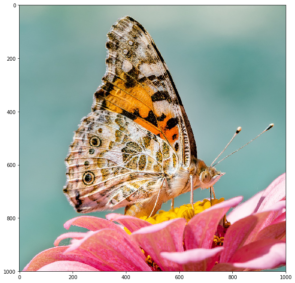
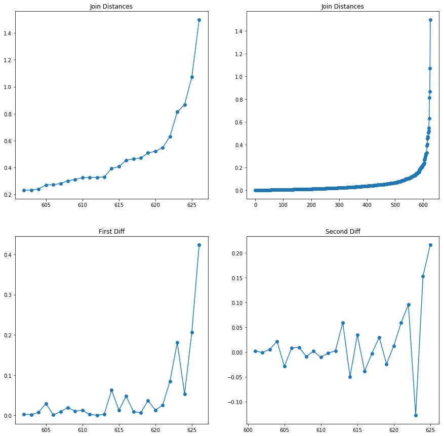
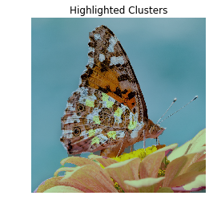
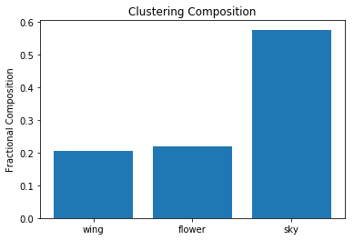
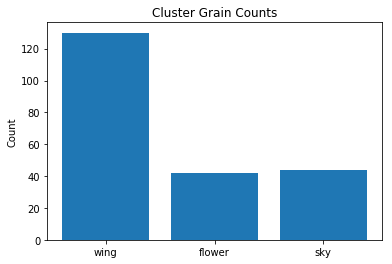
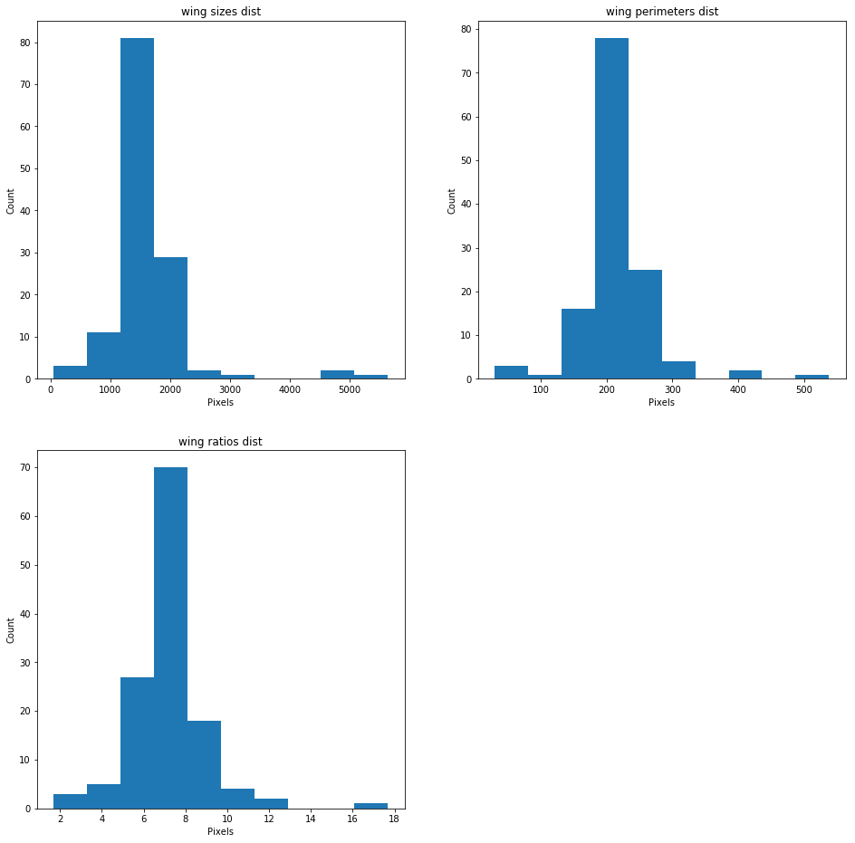

<!DOCTYPE html PUBLIC "-//W3C//DTD XHTML 1.0 Transitional//EN"
  "http://www.w3.org/TR/xhtml1/DTD/xhtml1-transitional.dtd">

<html xmlns="http://www.w3.org/1999/xhtml">
  <head>
    <meta http-equiv="X-UA-Compatible" content="IE=Edge" />
    <meta http-equiv="Content-Type" content="text/html; charset=utf-8" />
    <title>User Manual &#8212; Automated Thin Section Analysis 1.0.0 documentation</title>
    <link rel="stylesheet" href="../_static/alabaster.css" type="text/css" />
    <link rel="stylesheet" href="../_static/pygments.css" type="text/css" />
    <script type="text/javascript" id="documentation_options" data-url_root="../" src="../_static/documentation_options.js"></script>
    <script type="text/javascript" src="../_static/jquery.js"></script>
    <script type="text/javascript" src="../_static/underscore.js"></script>
    <script type="text/javascript" src="../_static/doctools.js"></script>
    <script type="text/javascript" src="../_static/language_data.js"></script>
    <link rel="index" title="Index" href="../genindex.html" />
    <link rel="search" title="Search" href="../search.html" />
    <link rel="next" title="SLIC" href="../mods/SLIC.html" />
    <link rel="prev" title="Instiallation Guide" href="../mods/instillation.html" />
   
  <link rel="stylesheet" href="../_static/custom.css" type="text/css" />
  
  
  <meta name="viewport" content="width=device-width, initial-scale=0.9, maximum-scale=0.9" />

  </head><body>
  

    <div class="document">
      <div class="documentwrapper">
        <div class="bodywrapper">
          

          <div class="body" role="main">
            
  <div class="section" id="user-manual">
<h1>User Manual<a class="headerlink" href="#user-manual" title="Permalink to this headline">¶</a></h1>
<p>This is an example of using the tools developed for the Thin Section
Analysis project in the intended workflow.</p>
<div class="section" id="download-code">
<h2>Download Code<a class="headerlink" href="#download-code" title="Permalink to this headline">¶</a></h2>
<p>If not already present this clones the repo into google colab. If all
packages are already locally present this is not needed.</p>
<div class="code ipython3 highlight-default notranslate"><div class="highlight"><pre><span></span>from getpass import getpass
import os

!git config --global user.name &quot;Richard Boyne&quot;
!git config --global user.email &quot;boynerichard@yahoo.co.uk&quot;

# if not in a repo clone the desired one
if not os.path.isdir(&quot;.git&quot;):

    # get username and password
    user = &quot;Boyne272&quot;
    password = getpass(&#39;github password&#39;)
    os.environ[&#39;GITHUB_AUTH&#39;] = user + &#39;:&#39; + password

    # clone the repo
    !git clone --quiet https://$GITHUB_AUTH@github.com/msc-acse/acse-9-independent-research-project-Boyne272.git repo

    # move the repo directory up one
    !mv repo/.git .

    # swap to the wanted branch
#     !git checkout master --quiet
    !git checkout post_processing --quiet


    # move to previous commit
    !git reset --quiet --hard

# remove the sample data if there
if os.path.isdir(&quot;sample_data&quot;):
    !rm -r sample_data/

# remove the tmp repo folder if there
if os.path.isdir(&quot;repo&quot;):
    !rm -r repo

# show where we are
!git show --summary
</pre></div>
</div>
<div class="highlight-default notranslate"><div class="highlight"><pre><span></span>github password··········
commit 6f881be97474c6e86b1753964a084391b8edf009 (HEAD -&gt; master, origin/master, origin/HEAD)
Merge: 59dda18 6b8847d
Author: Richard Boyne &lt;31725818+Boyne272@users.noreply.github.com&gt;
Date:   Wed Aug 21 10:21:43 2019 +0100

    Merge pull request #5 from msc-acse/post_processing

    Post processing
</pre></div>
</div>
</div>
<div class="section" id="run-tests">
<h2>Run Tests<a class="headerlink" href="#run-tests" title="Permalink to this headline">¶</a></h2>
<p>Short example of running all module tests</p>
<div class="code ipython3 highlight-default notranslate"><div class="highlight"><pre><span></span>!pytest # last run 21st Aug
</pre></div>
</div>
<div class="highlight-default notranslate"><div class="highlight"><pre><span></span>============================= test session starts ==============================
platform linux2 -- Python 2.7.15+, pytest-3.6.4, py-1.8.0, pluggy-0.7.1
rootdir: /content, inifile:
collected 24 items                                                             

kmeans/test_MSLIC.py ...                                                 [ 12%]
kmeans/test_SLIC.py .....                                                [ 33%]
merging/test_AGNES.py ...                                                [ 45%]
merging/test_Segments.py ........                                        [ 79%]
pre_post_processing/test_Image_processor.py ....                         [ 95%]
pre_post_processing/test_Segment_Analyser.py .                           [100%]

========================== 24 passed in 81.07 seconds ==========================
</pre></div>
</div>
</div>
<div class="section" id="imports">
<h2>Imports<a class="headerlink" href="#imports" title="Permalink to this headline">¶</a></h2>
<div class="code ipython3 highlight-default notranslate"><div class="highlight"><pre><span></span><span class="c1"># Ipython magic functions</span>
<span class="o">%</span><span class="n">load_ext</span> <span class="n">autoreload</span>
<span class="o">%</span><span class="n">autoreload</span> <span class="mi">2</span>
<span class="o">%</span><span class="n">matplotlib</span> <span class="n">inline</span>

<span class="c1"># path extensions to find local modules</span>
<span class="kn">import</span> <span class="nn">sys</span>
<span class="n">sys</span><span class="o">.</span><span class="n">path</span><span class="o">.</span><span class="n">insert</span><span class="p">(</span><span class="mi">0</span><span class="p">,</span> <span class="s2">&quot;/content/kmeans&quot;</span><span class="p">)</span>
<span class="n">sys</span><span class="o">.</span><span class="n">path</span><span class="o">.</span><span class="n">insert</span><span class="p">(</span><span class="mi">0</span><span class="p">,</span> <span class="s2">&quot;/content/merging&quot;</span><span class="p">)</span>
<span class="n">sys</span><span class="o">.</span><span class="n">path</span><span class="o">.</span><span class="n">insert</span><span class="p">(</span><span class="mi">0</span><span class="p">,</span> <span class="s2">&quot;/content/pre_post_processing&quot;</span><span class="p">)</span>
</pre></div>
</div>
<div class="code ipython3 highlight-default notranslate"><div class="highlight"><pre><span></span><span class="c1"># imports</span>
<span class="kn">import</span> <span class="nn">torch</span>
<span class="kn">import</span> <span class="nn">matplotlib.pyplot</span> <span class="k">as</span> <span class="nn">plt</span>
<span class="kn">import</span> <span class="nn">numpy</span> <span class="k">as</span> <span class="nn">np</span>
<span class="kn">import</span> <span class="nn">pandas</span> <span class="k">as</span> <span class="nn">pd</span>

<span class="c1"># custom imports</span>
<span class="kn">from</span> <span class="nn">AGNES</span> <span class="k">import</span> <span class="n">AGNES</span>
<span class="kn">from</span> <span class="nn">Image_processor</span> <span class="k">import</span> <span class="n">Image_processor</span>
<span class="kn">from</span> <span class="nn">Segment_Analyser</span> <span class="k">import</span> <span class="n">Segment_Analyser</span>
<span class="kn">from</span> <span class="nn">Segments</span> <span class="k">import</span> <span class="n">segment_group</span>
<span class="kn">from</span> <span class="nn">SLIC</span> <span class="k">import</span> <span class="n">SLIC</span>
<span class="kn">from</span> <span class="nn">MSLIC</span> <span class="k">import</span> <span class="n">MSLIC_wrapper</span>
</pre></div>
</div>
</div>
</div>
<div class="section" id="butterfly-segmentation-example">
<h1>Butterfly Segmentation Example<a class="headerlink" href="#butterfly-segmentation-example" title="Permalink to this headline">¶</a></h1>
<p>First we need to load the image, Image processor is a module to assist
with loading an image and apply any kind of filters initially wanted.</p>
<div class="code ipython3 highlight-default notranslate"><div class="highlight"><pre><span></span><span class="n">butterfly_IP</span> <span class="o">=</span> <span class="n">Image_processor</span><span class="p">(</span><span class="n">path</span><span class="o">=</span><span class="s1">&#39;/content/images/butterfly.tif&#39;</span><span class="p">)</span>
<span class="n">butterfly_IP</span><span class="o">.</span><span class="n">plot</span><span class="p">()</span>
</pre></div>
</div>

<div class="section" id="segmentation">
<h2>Segmentation<a class="headerlink" href="#segmentation" title="Permalink to this headline">¶</a></h2>
<p>For the SLIC segmentation it help reduce disjointed segments if we first
clur the image slightly, this quite easy to do with Image_processor.</p>
<div class="code ipython3 highlight-default notranslate"><div class="highlight"><pre><span></span><span class="n">blured_img</span> <span class="o">=</span> <span class="n">butterfly_IP</span><span class="o">.</span><span class="n">gauss</span><span class="p">(</span><span class="n">sigma</span><span class="o">=</span><span class="mi">3</span><span class="p">)</span>
</pre></div>
</div>
<p>Now we can look at what SLIC manages to do with this.</p>
<div class="code ipython3 highlight-default notranslate"><div class="highlight"><pre><span></span><span class="c1"># create the SLIC object iterate it and plot</span>
<span class="n">butterfly_SLIC</span> <span class="o">=</span> <span class="n">SLIC</span><span class="p">(</span><span class="n">blured_img</span><span class="p">,</span> <span class="n">bin_grid</span><span class="o">=</span><span class="p">[</span><span class="mi">25</span><span class="p">,</span> <span class="mi">25</span><span class="p">])</span>
<span class="n">butterfly_SLIC</span><span class="o">.</span><span class="n">iterate</span><span class="p">(</span><span class="mi">10</span><span class="p">)</span>
<span class="n">butterfly_SLIC</span><span class="o">.</span><span class="n">plot</span><span class="p">()</span>
</pre></div>
</div>
<div class="highlight-default notranslate"><div class="highlight"><pre><span></span><span class="n">Progress</span> <span class="o">|</span><span class="c1">###################################################| 84.5368 s</span>
</pre></div>
</div>

</div>
<div class="section" id="segment-clustering">
<h2>Segment Clustering<a class="headerlink" href="#segment-clustering" title="Permalink to this headline">¶</a></h2>
<p>To extract features of each segment for clustering we need to create a
segment_group obj. This will need the mask from the SLUC implenetation.
When initialising disjoineted segments will be split, hence there will
be more segments than in the above image.</p>
<div class="code ipython3 highlight-default notranslate"><div class="highlight"><pre><span></span><span class="c1"># extract mask</span>
<span class="n">butterfly_mask</span> <span class="o">=</span> <span class="n">butterfly_SLIC</span><span class="o">.</span><span class="n">get_segmentation</span><span class="p">()</span>

<span class="c1"># create segment groups, enforce size and plot</span>
<span class="n">butterfly_segs</span> <span class="o">=</span> <span class="n">segment_group</span><span class="p">(</span><span class="n">butterfly_mask</span><span class="p">)</span>

<span class="c1"># plot the segments</span>
<span class="n">original_img</span> <span class="o">=</span> <span class="n">butterfly_IP</span><span class="o">.</span><span class="n">imgs</span><span class="p">[</span><span class="s1">&#39;original&#39;</span><span class="p">]</span>
<span class="n">butterfly_segs</span><span class="o">.</span><span class="n">plot</span><span class="p">(</span><span class="n">back_img</span><span class="o">=</span><span class="n">original_img</span><span class="p">)</span>
</pre></div>
</div>
<div class="highlight-default notranslate"><div class="highlight"><pre><span></span><span class="mi">641</span>
<span class="n">Initalising</span> <span class="mi">641</span> <span class="n">segments</span>
<span class="n">Progress</span> <span class="o">|</span><span class="c1">###################################################| 53.6985 s</span>
</pre></div>
</div>

<p>This splitting makes several very small segments. We can force these to
merge with there largest neighbour with segment_group.</p>
<div class="code ipython3 highlight-default notranslate"><div class="highlight"><pre><span></span><span class="n">butterfly_segs</span><span class="o">.</span><span class="n">enforce_size</span><span class="p">(</span><span class="n">min_size</span><span class="o">=</span><span class="mi">50</span><span class="p">)</span>
</pre></div>
</div>
<div class="highlight-default notranslate"><div class="highlight"><pre><span></span><span class="mi">13</span> <span class="n">segments</span> <span class="n">merged</span>
<span class="n">Initalising</span> <span class="mi">65</span> <span class="n">segments</span>
<span class="n">Progress</span> <span class="o">|</span><span class="c1">###################################################| 5.6965 s</span>
</pre></div>
</div>
<p>Notice how only 65 segments were recreated; since those with unchanging
neighbours dont need any recaculations they are kept the same.</p>
<p>Now we can extract features from each segment, to do an extraction
function is needed.</p>
<div class="code ipython3 highlight-default notranslate"><div class="highlight"><pre><span></span><span class="c1"># define the features to be extracted</span>
<span class="k">def</span> <span class="nf">basic_color_extraction</span><span class="p">(</span><span class="n">Xs</span><span class="p">,</span> <span class="n">Ys</span><span class="p">,</span> <span class="n">img1</span><span class="p">):</span>
    <span class="n">avgs1</span> <span class="o">=</span> <span class="n">img1</span><span class="p">[</span><span class="n">Ys</span><span class="p">,</span> <span class="n">Xs</span><span class="p">]</span><span class="o">.</span><span class="n">mean</span><span class="p">(</span><span class="n">axis</span><span class="o">=</span><span class="mi">0</span><span class="p">)</span>
    <span class="k">return</span> <span class="p">[</span><span class="o">*</span><span class="n">avgs1</span><span class="p">]</span>

<span class="c1"># extract features</span>
<span class="n">butterfly_feats</span> <span class="o">=</span> <span class="n">butterfly_segs</span><span class="o">.</span><span class="n">feature_extraction</span><span class="p">(</span>
                      <span class="n">extract_func</span> <span class="o">=</span> <span class="n">basic_color_extraction</span><span class="p">,</span>
                      <span class="n">func_vars</span> <span class="o">=</span> <span class="p">[</span><span class="n">blured_img</span><span class="p">])</span>

<span class="c1"># inspect features</span>
<span class="n">titles</span> <span class="o">=</span> <span class="p">[</span><span class="s1">&#39;red_avg&#39;</span><span class="p">,</span> <span class="s1">&#39;green_avg&#39;</span><span class="p">,</span> <span class="s1">&#39;blue_avg&#39;</span><span class="p">]</span>
<span class="n">pd</span><span class="o">.</span><span class="n">DataFrame</span><span class="p">(</span><span class="n">butterfly_feats</span><span class="p">,</span> <span class="n">columns</span><span class="o">=</span><span class="n">titles</span><span class="p">)</span><span class="o">.</span><span class="n">describe</span><span class="p">()</span>
</pre></div>
</div>
<div>
<style scoped>
    .dataframe tbody tr th:only-of-type {
        vertical-align: middle;
    }

    .dataframe tbody tr th {
        vertical-align: top;
    }

    .dataframe thead th {
        text-align: right;
    }
</style>
<table border="1" class="dataframe">
  <thead>
    <tr style="text-align: right;">
      <th></th>
      <th>red_avg</th>
      <th>green_avg</th>
      <th>blue_avg</th>
    </tr>
  </thead>
  <tbody>
    <tr>
      <th>count</th>
      <td>628.000000</td>
      <td>628.000000</td>
      <td>628.000000</td>
    </tr>
    <tr>
      <th>mean</th>
      <td>0.633492</td>
      <td>0.590180</td>
      <td>0.548509</td>
    </tr>
    <tr>
      <th>std</th>
      <td>0.178521</td>
      <td>0.161467</td>
      <td>0.188331</td>
    </tr>
    <tr>
      <th>min</th>
      <td>0.139023</td>
      <td>0.050462</td>
      <td>0.034291</td>
    </tr>
    <tr>
      <th>25%</th>
      <td>0.495582</td>
      <td>0.529275</td>
      <td>0.465894</td>
    </tr>
    <tr>
      <th>50%</th>
      <td>0.584799</td>
      <td>0.646804</td>
      <td>0.618828</td>
    </tr>
    <tr>
      <th>75%</th>
      <td>0.780434</td>
      <td>0.693747</td>
      <td>0.668248</td>
    </tr>
    <tr>
      <th>max</th>
      <td>0.986018</td>
      <td>0.911795</td>
      <td>0.935627</td>
    </tr>
  </tbody>
</table>
</div><p>We have used a pandas dataframe to inspect the extracted features. They
seem good, with means and standard deviations of similar magnitude. We
can now use our chosen unspuervised clustering algorithm to group
segments by common features. Here we are using the AGNES clustering</p>
<div class="code ipython3 highlight-default notranslate"><div class="highlight"><pre><span></span><span class="n">butterly_AGNES</span> <span class="o">=</span> <span class="n">AGNES</span><span class="p">(</span><span class="n">butterfly_feats</span><span class="p">)</span>
<span class="n">butterly_AGNES</span><span class="o">.</span><span class="n">iterate</span><span class="p">()</span>
<span class="n">butterly_AGNES</span><span class="o">.</span><span class="n">cluster_distance_plot</span><span class="p">(</span><span class="s1">&#39;all&#39;</span><span class="p">)</span>
</pre></div>
</div>
<div class="highlight-default notranslate"><div class="highlight"><pre><span></span><span class="n">Progress</span> <span class="o">|</span><span class="c1">###################################################| 0.3791 s</span>
</pre></div>
</div>

<p>Plotted above is merge distance vs iterations and its respective
derivatives on the last few iterations. In the second derivative there
is a spike arounf iteration 610, suggesting that this is where we start
merging different material groups. To get this point we cluster up to a
certain viaration in standard deviation, here chosen to be 3.</p>
<div class="code ipython3 highlight-default notranslate"><div class="highlight"><pre><span></span><span class="c1"># get the clustering up to 3rd standard deviation</span>
<span class="n">butterly_clusters</span> <span class="o">=</span> <span class="n">butterly_AGNES</span><span class="o">.</span><span class="n">cluster_by_derivative</span><span class="p">(</span><span class="n">n_std</span><span class="o">=</span><span class="mf">3.</span><span class="p">,</span> <span class="n">plot</span><span class="o">=</span><span class="kc">False</span><span class="p">)</span>
</pre></div>
</div>
<div class="highlight-default notranslate"><div class="highlight"><pre><span></span><span class="n">Clustering</span> <span class="n">up</span> <span class="n">to</span> <span class="mi">2</span><span class="n">nd</span> <span class="n">derivative</span> <span class="mf">0.04021483184552015</span>
<span class="n">Clustering</span> <span class="n">into</span> <span class="mi">14</span> <span class="n">segments</span>
</pre></div>
</div>
<p>By passing this clustering to the segment_group we can plot what
segments were cluster together.</p>
<div class="code ipython3 highlight-default notranslate"><div class="highlight"><pre><span></span><span class="c1"># assign these cluster in the segment groups</span>
<span class="n">butterfly_segs</span><span class="o">.</span><span class="n">assign_clusters</span><span class="p">(</span><span class="n">butterly_clusters</span><span class="p">)</span>

<span class="c1"># plot these clusters</span>
<span class="n">butterfly_segs</span><span class="o">.</span><span class="n">plot</span><span class="p">(</span><span class="s1">&#39;cluster_all&#39;</span><span class="p">,</span> <span class="n">back_img</span> <span class="o">=</span> <span class="n">original_img</span><span class="p">)</span>
</pre></div>
</div>

<p>Though only color was used the clusters are mostly reasonable, thoough a
few regions of wing are confused with sky. If we are happy with these
clusters we can merge with them, if not we can do another featuer
extraction and clustering without needing to reinitalise the
segment_group object.</p>
</div>
<div class="section" id="edge-analysis-if-wanted">
<h2>Edge analysis (if wanted)<a class="headerlink" href="#edge-analysis-if-wanted" title="Permalink to this headline">¶</a></h2>
<p>If we want to an edge detection can be done to assist the later merging
so that only segments with no edge between them are merged. This is not
needed to do the mergering, and so this section can be skipped.</p>
<p>First we need an image with edges detected in it.</p>
<div class="code ipython3 highlight-default notranslate"><div class="highlight"><pre><span></span><span class="n">butterfly_IP</span><span class="o">.</span><span class="n">reset</span><span class="p">()</span>
<span class="n">butterfly_IP</span><span class="o">.</span><span class="n">scharr</span><span class="p">()</span>
<span class="n">butterfly_IP</span><span class="o">.</span><span class="n">grey_scale</span><span class="p">()</span>
<span class="n">binary_edges</span> <span class="o">=</span> <span class="n">butterfly_IP</span><span class="o">.</span><span class="n">threshold</span><span class="p">(</span><span class="n">value</span><span class="o">=.</span><span class="mi">05</span><span class="p">)</span>
<span class="n">butterfly_IP</span><span class="o">.</span><span class="n">plot</span><span class="p">()</span>
</pre></div>
</div>

<p>Now by defining an edge confidence function with this image (similar to
the feature extraction function before) we can assign this to the
segment_group object.</p>
<div class="code ipython3 highlight-default notranslate"><div class="highlight"><pre><span></span><span class="c1"># define extraction function</span>
<span class="k">def</span> <span class="nf">edge_extraction</span><span class="p">(</span><span class="n">Xs</span><span class="p">,</span> <span class="n">Ys</span><span class="p">,</span> <span class="n">scharr_img</span><span class="p">):</span>
    <span class="k">return</span> <span class="n">scharr_img</span><span class="p">[</span><span class="n">Ys</span><span class="p">,</span> <span class="n">Xs</span><span class="p">]</span><span class="o">.</span><span class="n">mean</span><span class="p">()</span> <span class="o">/</span> <span class="n">scharr_img</span><span class="o">.</span><span class="n">std</span><span class="p">()</span>

<span class="c1"># pass this to the group object and plot it</span>
<span class="n">butterfly_segs</span><span class="o">.</span><span class="n">edge_confidence</span><span class="p">(</span><span class="n">confidence_func</span> <span class="o">=</span> <span class="n">edge_extraction</span><span class="p">,</span>
                               <span class="n">func_vars</span> <span class="o">=</span> <span class="p">[</span><span class="n">binary_edges</span><span class="p">])</span>
<span class="n">butterfly_segs</span><span class="o">.</span><span class="n">plot</span><span class="p">(</span><span class="s1">&#39;edge_conf&#39;</span><span class="p">,</span> <span class="n">back_img</span> <span class="o">=</span> <span class="n">original_img</span><span class="p">)</span>
</pre></div>
</div>

<p>So as we can see some edges are confident that they exist and others are
less so. Since these have been assigned to the segment_group they will
automatically be considered in the merging stage (the threshold for an
edge being present can be set if want)</p>
</div>
<div class="section" id="segment-merging">
<h2>Segment Merging<a class="headerlink" href="#segment-merging" title="Permalink to this headline">¶</a></h2>
<p>Now the segment_group knows the clustering (and edge confidences) we
can instruct it to merge segments that are adjasent, in the same cluster
(and have a edge confidence below the given threshold). Note we could
also merge without clusters and just edge confidence instead.</p>
<div class="code ipython3 highlight-default notranslate"><div class="highlight"><pre><span></span><span class="c1"># merge using clustering and edge confidence (if given)</span>
<span class="n">butterfly_segs</span><span class="o">.</span><span class="n">merge_by_cluster</span><span class="p">(</span><span class="n">edge_present</span><span class="o">=</span><span class="mf">1.</span><span class="p">)</span>

<span class="c1"># # merge if there is a low edge confidence only</span>
<span class="c1"># butterfly_segs.merge_by_edge(edge_absent=.1)</span>

<span class="c1"># plot the resultant clustering</span>
<span class="n">butterfly_segs</span><span class="o">.</span><span class="n">plot</span><span class="p">(</span><span class="s1">&#39;merged_edges&#39;</span><span class="p">,</span> <span class="n">back_img</span><span class="o">=</span><span class="n">butterfly_IP</span><span class="o">.</span><span class="n">imgs</span><span class="p">[</span><span class="s1">&#39;original&#39;</span><span class="p">])</span>
</pre></div>
</div>
<div class="highlight-default notranslate"><div class="highlight"><pre><span></span><span class="mi">412</span> <span class="n">segments</span> <span class="n">merged</span>
<span class="n">Initalising</span> <span class="mi">113</span> <span class="n">segments</span>
<span class="n">Progress</span> <span class="o">|</span><span class="c1">###################################################| 9.8255 s</span>
</pre></div>
</div>

</div>
<div class="section" id="repeat-if-wanted">
<h2>Repeat (if wanted)<a class="headerlink" href="#repeat-if-wanted" title="Permalink to this headline">¶</a></h2>
<p>At this point the process of clustering, edge detection and merging
could be repeated if wanted.</p>
<p>Caution is needed when clustering as there are less samples in the
clustering routene so it may struggle. Another point of caution is that
if one experiments with different clustering here it will affect the
clusters used in the segment analysis section.</p>
<p>This second repeat is done here as it is not benificial for this image.</p>
<div class="code ipython3 highlight-default notranslate"><div class="highlight"><pre><span></span><span class="c1"># # feature extraction</span>
<span class="c1"># butterfly_feats = butterfly_segs.feature_extraction(</span>
<span class="c1">#                       extract_func = basic_color_extraction,</span>
<span class="c1">#                       func_vars = [blured_img])</span>

<span class="c1"># # clustering</span>
<span class="c1"># butterly_AGNES = AGNES(butterfly_feats)</span>
<span class="c1"># butterly_AGNES.iterate()</span>

<span class="c1"># # get the clustering and assign it</span>
<span class="c1"># butterly_clusters = butterly_AGNES.cluster_by_derivative(n_std=2., plot=False)</span>
<span class="c1"># butterfly_segs.assign_clusters(butterly_clusters)</span>

<span class="c1"># # plot these clusters</span>
<span class="c1"># butterfly_segs.plot(&#39;cluster_all&#39;, back_img=original_img)</span>
</pre></div>
</div>
<div class="code ipython3 highlight-default notranslate"><div class="highlight"><pre><span></span><span class="c1"># # implement cluster merging (no edge detection used this time)</span>
<span class="c1"># butterfly_segs.merge_by_cluster()</span>
<span class="c1"># butterfly_segs.plot(&#39;both&#39;, back_img=original_img)</span>
</pre></div>
</div>
</div>
<div class="section" id="segmentation-analysis">
<h2>Segmentation Analysis<a class="headerlink" href="#segmentation-analysis" title="Permalink to this headline">¶</a></h2>
<p>Now we have our segmented image we can analyse the distributions within
each cluster.</p>
<p>First we need to create the Segment_Analysis obj with the segmentation
mask and clustering mask.</p>
<div class="code ipython3 highlight-default notranslate"><div class="highlight"><pre><span></span><span class="c1"># extract the cluster mask</span>
<span class="n">butterfly_cluster</span> <span class="o">=</span> <span class="n">butterfly_segs</span><span class="o">.</span><span class="n">get_cluster_mask</span><span class="p">()</span>

<span class="c1"># extract the segments mask</span>
<span class="n">butterfly_mask</span> <span class="o">=</span> <span class="n">butterfly_segs</span><span class="o">.</span><span class="n">mask</span>

<span class="c1"># create the segment analyser obj</span>
<span class="n">butterfly_SA</span> <span class="o">=</span> <span class="n">Segment_Analyser</span><span class="p">(</span><span class="n">img</span> <span class="o">=</span> <span class="n">original_img</span><span class="p">,</span>
                                <span class="n">mask</span> <span class="o">=</span> <span class="n">butterfly_mask</span><span class="p">,</span>
                                <span class="n">clusters</span><span class="o">=</span><span class="n">butterfly_cluster</span><span class="p">)</span>
</pre></div>
</div>
<p>We can then label each cluster as something more appropirate for the
analysis. If we think two clusters are actually part of the same
material we give them both the same label and the clusters are grouped.
Here we will just label with sky, wing or flower for simplicity.</p>
<div class="code ipython3 highlight-default notranslate"><div class="highlight"><pre><span></span><span class="n">butterfly_SA</span><span class="o">.</span><span class="n">set_labels</span><span class="p">()</span>
</pre></div>
</div>

<div class="highlight-default notranslate"><div class="highlight"><pre><span></span><span class="n">Currently</span> <span class="n">labelled</span>  <span class="mi">0</span>
<span class="n">Give</span> <span class="n">a</span> <span class="n">new</span> <span class="n">label</span> <span class="p">(</span><span class="n">leave</span> <span class="n">blank</span> <span class="n">to</span> <span class="n">unchange</span><span class="p">):</span>
<span class="n">wing</span>
</pre></div>
</div>

<div class="highlight-default notranslate"><div class="highlight"><pre><span></span><span class="n">Currently</span> <span class="n">labelled</span>  <span class="mi">1</span>
<span class="n">Give</span> <span class="n">a</span> <span class="n">new</span> <span class="n">label</span> <span class="p">(</span><span class="n">leave</span> <span class="n">blank</span> <span class="n">to</span> <span class="n">unchange</span><span class="p">):</span>
<span class="n">wing</span>
</pre></div>
</div>

<div class="highlight-default notranslate"><div class="highlight"><pre><span></span><span class="n">Currently</span> <span class="n">labelled</span>  <span class="mi">2</span>
<span class="n">Give</span> <span class="n">a</span> <span class="n">new</span> <span class="n">label</span> <span class="p">(</span><span class="n">leave</span> <span class="n">blank</span> <span class="n">to</span> <span class="n">unchange</span><span class="p">):</span>
<span class="n">wing</span>
</pre></div>
</div>

<div class="highlight-default notranslate"><div class="highlight"><pre><span></span><span class="n">Currently</span> <span class="n">labelled</span>  <span class="mi">3</span>
<span class="n">Give</span> <span class="n">a</span> <span class="n">new</span> <span class="n">label</span> <span class="p">(</span><span class="n">leave</span> <span class="n">blank</span> <span class="n">to</span> <span class="n">unchange</span><span class="p">):</span>
<span class="n">wing</span>
</pre></div>
</div>

<div class="highlight-default notranslate"><div class="highlight"><pre><span></span><span class="n">Currently</span> <span class="n">labelled</span>  <span class="mi">4</span>
<span class="n">Give</span> <span class="n">a</span> <span class="n">new</span> <span class="n">label</span> <span class="p">(</span><span class="n">leave</span> <span class="n">blank</span> <span class="n">to</span> <span class="n">unchange</span><span class="p">):</span>
<span class="n">flower</span>
</pre></div>
</div>

<div class="highlight-default notranslate"><div class="highlight"><pre><span></span><span class="n">Currently</span> <span class="n">labelled</span>  <span class="mi">5</span>
<span class="n">Give</span> <span class="n">a</span> <span class="n">new</span> <span class="n">label</span> <span class="p">(</span><span class="n">leave</span> <span class="n">blank</span> <span class="n">to</span> <span class="n">unchange</span><span class="p">):</span>
<span class="n">sky</span>
</pre></div>
</div>

<div class="highlight-default notranslate"><div class="highlight"><pre><span></span><span class="n">Currently</span> <span class="n">labelled</span>  <span class="mi">6</span>
<span class="n">Give</span> <span class="n">a</span> <span class="n">new</span> <span class="n">label</span> <span class="p">(</span><span class="n">leave</span> <span class="n">blank</span> <span class="n">to</span> <span class="n">unchange</span><span class="p">):</span>
<span class="n">flower</span>
</pre></div>
</div>

<div class="highlight-default notranslate"><div class="highlight"><pre><span></span><span class="n">Currently</span> <span class="n">labelled</span>  <span class="mi">7</span>
<span class="n">Give</span> <span class="n">a</span> <span class="n">new</span> <span class="n">label</span> <span class="p">(</span><span class="n">leave</span> <span class="n">blank</span> <span class="n">to</span> <span class="n">unchange</span><span class="p">):</span>
<span class="n">flower</span>
</pre></div>
</div>

<div class="highlight-default notranslate"><div class="highlight"><pre><span></span><span class="n">Currently</span> <span class="n">labelled</span>  <span class="mi">8</span>
<span class="n">Give</span> <span class="n">a</span> <span class="n">new</span> <span class="n">label</span> <span class="p">(</span><span class="n">leave</span> <span class="n">blank</span> <span class="n">to</span> <span class="n">unchange</span><span class="p">):</span>
<span class="n">sky</span>
</pre></div>
</div>

<div class="highlight-default notranslate"><div class="highlight"><pre><span></span><span class="n">Currently</span> <span class="n">labelled</span>  <span class="mi">9</span>
<span class="n">Give</span> <span class="n">a</span> <span class="n">new</span> <span class="n">label</span> <span class="p">(</span><span class="n">leave</span> <span class="n">blank</span> <span class="n">to</span> <span class="n">unchange</span><span class="p">):</span>
<span class="n">wing</span>
</pre></div>
</div>

<div class="highlight-default notranslate"><div class="highlight"><pre><span></span><span class="n">Currently</span> <span class="n">labelled</span>  <span class="mi">10</span>
<span class="n">Give</span> <span class="n">a</span> <span class="n">new</span> <span class="n">label</span> <span class="p">(</span><span class="n">leave</span> <span class="n">blank</span> <span class="n">to</span> <span class="n">unchange</span><span class="p">):</span>
<span class="n">flower</span>
</pre></div>
</div>

<div class="highlight-default notranslate"><div class="highlight"><pre><span></span><span class="n">Currently</span> <span class="n">labelled</span>  <span class="mi">11</span>
<span class="n">Give</span> <span class="n">a</span> <span class="n">new</span> <span class="n">label</span> <span class="p">(</span><span class="n">leave</span> <span class="n">blank</span> <span class="n">to</span> <span class="n">unchange</span><span class="p">):</span>
<span class="n">flower</span>
</pre></div>
</div>

<div class="highlight-default notranslate"><div class="highlight"><pre><span></span><span class="n">Currently</span> <span class="n">labelled</span>  <span class="mi">12</span>
<span class="n">Give</span> <span class="n">a</span> <span class="n">new</span> <span class="n">label</span> <span class="p">(</span><span class="n">leave</span> <span class="n">blank</span> <span class="n">to</span> <span class="n">unchange</span><span class="p">):</span>
<span class="n">flower</span>
</pre></div>
</div>

<div class="highlight-default notranslate"><div class="highlight"><pre><span></span><span class="n">Currently</span> <span class="n">labelled</span>  <span class="mi">13</span>
<span class="n">Give</span> <span class="n">a</span> <span class="n">new</span> <span class="n">label</span> <span class="p">(</span><span class="n">leave</span> <span class="n">blank</span> <span class="n">to</span> <span class="n">unchange</span><span class="p">):</span>
<span class="n">wing</span>
<span class="n">Current</span> <span class="n">Labels</span><span class="p">:</span> <span class="p">[</span><span class="s1">&#39;wing&#39;</span><span class="p">,</span> <span class="s1">&#39;flower&#39;</span><span class="p">,</span> <span class="s1">&#39;sky&#39;</span><span class="p">]</span>
</pre></div>
</div>
<p>Since the clusters are now labeled we can look at the overall (final)
segmentation.</p>
<p>Note the following plot function chooses colors randomly so you might
need to run a few times to get a clear image.</p>
<div class="code ipython3 highlight-default notranslate"><div class="highlight"><pre><span></span><span class="n">butterfly_SA</span><span class="o">.</span><span class="n">plot_clusters</span><span class="p">()</span>
</pre></div>
</div>

<p>As can be seen there is some confusion between bits of wing and the
other two regions, other than that the segementation seems ok.</p>
<p>We can see the distributions of each cluster as well.</p>
<div class="code ipython3 highlight-default notranslate"><div class="highlight"><pre><span></span><span class="n">butterfly_SA</span><span class="o">.</span><span class="n">get_composition</span><span class="p">()</span>
<span class="n">butterfly_SA</span><span class="o">.</span><span class="n">get_grain_count</span><span class="p">()</span>
</pre></div>
</div>
<div class="highlight-default notranslate"><div class="highlight"><pre><span></span><span class="n">Tabel</span> <span class="n">of</span> <span class="n">Compositions</span>
<span class="mf">20.56</span> <span class="o">%</span>      <span class="n">wing</span>
<span class="mf">21.87</span> <span class="o">%</span>      <span class="n">flower</span>
<span class="mf">57.57</span> <span class="o">%</span>      <span class="n">sky</span>
<span class="n">Tabel</span> <span class="n">of</span> <span class="n">Grain</span> <span class="n">Count</span>
<span class="mi">130</span>          <span class="n">wing</span>
<span class="mi">42</span>   <span class="n">flower</span>
<span class="mi">44</span>   <span class="n">sky</span>
</pre></div>
</div>


<div class="code ipython3 highlight-default notranslate"><div class="highlight"><pre><span></span><span class="c1"># these take slighly longer to find</span>
<span class="k">for</span> <span class="n">label</span> <span class="ow">in</span> <span class="p">[</span><span class="s1">&#39;sky&#39;</span><span class="p">,</span> <span class="s1">&#39;wing&#39;</span><span class="p">,</span> <span class="s1">&#39;flower&#39;</span><span class="p">]:</span>
    <span class="n">butterfly_SA</span><span class="o">.</span><span class="n">get_gsd</span><span class="p">(</span><span class="n">label</span><span class="p">)</span>
    <span class="n">butterfly_SA</span><span class="o">.</span><span class="n">get_span</span><span class="p">(</span><span class="n">label</span><span class="p">)</span>
</pre></div>
</div>
<div class="highlight-default notranslate"><div class="highlight"><pre><span></span><span class="n">Progress</span> <span class="o">|</span><span class="c1">###################################################| 3.2276 s</span>
</pre></div>
</div>





<p>If any of the results want to be further analysed than an option
return_arr in the above functions get the specific values plotted
above.</p>
<p>To save results all that needed is to save the segmentation mask and
cluster mask. These can likewise be used to pick up from any point in
the routene shown here.</p>
<p>For further information refer to the docstrings at _________.</p>
</div>
</div>
<div class="section" id="created-by-richard-boyne-rmb115-ic-ac-uk-on-29th-august-2019">
<h1>_ created by Richard Boyne (<a class="reference external" href="mailto:rmb115&#37;&#52;&#48;ic&#46;ac&#46;uk">rmb115<span>&#64;</span>ic<span>&#46;</span>ac<span>&#46;</span>uk</a>) on 29th August 2019<a class="headerlink" href="#created-by-richard-boyne-rmb115-ic-ac-uk-on-29th-august-2019" title="Permalink to this headline">¶</a></h1>
</div>


          </div>
          
        </div>
      </div>
      <div class="sphinxsidebar" role="navigation" aria-label="main navigation">
        <div class="sphinxsidebarwrapper">
<h1 class="logo"><a href="../index.html">Automated Thin Section Analysis</a></h1>


<h3>Navigation</h3>
<p class="caption"><span class="caption-text">Seup:</span></p>
<ul class="current">
<li class="toctree-l1"><a class="reference internal" href="../mods/instillation.html">Instillation</a></li>
<li class="toctree-l1 current"><a class="current reference internal" href="#">User Manual</a><ul>
<li class="toctree-l2"><a class="reference internal" href="#download-code">Download Code</a></li>
<li class="toctree-l2"><a class="reference internal" href="#run-tests">Run Tests</a></li>
<li class="toctree-l2"><a class="reference internal" href="#imports">Imports</a></li>
</ul>
</li>
<li class="toctree-l1"><a class="reference internal" href="#butterfly-segmentation-example">Butterfly Segmentation Example</a><ul>
<li class="toctree-l2"><a class="reference internal" href="#segmentation">Segmentation</a></li>
<li class="toctree-l2"><a class="reference internal" href="#segment-clustering">Segment Clustering</a></li>
<li class="toctree-l2"><a class="reference internal" href="#edge-analysis-if-wanted">Edge analysis (if wanted)</a></li>
<li class="toctree-l2"><a class="reference internal" href="#segment-merging">Segment Merging</a></li>
<li class="toctree-l2"><a class="reference internal" href="#repeat-if-wanted">Repeat (if wanted)</a></li>
<li class="toctree-l2"><a class="reference internal" href="#segmentation-analysis">Segmentation Analysis</a></li>
</ul>
</li>
<li class="toctree-l1"><a class="reference internal" href="#created-by-richard-boyne-rmb115-ic-ac-uk-on-29th-august-2019">_ created by Richard Boyne (rmb115&#64;ic.ac.uk) on 29th August 2019</a></li>
</ul>
<p class="caption"><span class="caption-text">_Classes:</span></p>
<ul>
<li class="toctree-l1"><a class="reference internal" href="../mods/SLIC.html">SLIC</a></li>
<li class="toctree-l1"><a class="reference internal" href="../mods/MSLIC.html">MSLIC</a></li>
<li class="toctree-l1"><a class="reference internal" href="../mods/Segments.html">Segments</a></li>
<li class="toctree-l1"><a class="reference internal" href="../mods/AGNES.html">AGNES</a></li>
<li class="toctree-l1"><a class="reference internal" href="../mods/Image_processor.html">Image Processor</a></li>
<li class="toctree-l1"><a class="reference internal" href="../mods/Segment_Analyser.html">Segment Analyser</a></li>
<li class="toctree-l1"><a class="reference internal" href="../mods/tools.html">Tools</a></li>
</ul>
<p class="caption"><span class="caption-text">Formalities:</span></p>
<ul>
<li class="toctree-l1"><a class="reference internal" href="../mods/Licence.html">Licence</a></li>
</ul>

<div class="relations">
<h3>Related Topics</h3>
<ul>
  <li><a href="../index.html">Documentation overview</a><ul>
      <li>Previous: <a href="../mods/instillation.html" title="previous chapter">Instiallation Guide</a></li>
      <li>Next: <a href="../mods/SLIC.html" title="next chapter">SLIC</a></li>
  </ul></li>
</ul>
</div>
<div id="searchbox" style="display: none" role="search">
  <h3>Quick search</h3>
    <div class="searchformwrapper">
    <form class="search" action="../search.html" method="get">
      <input type="text" name="q" />
      <input type="submit" value="Go" />
      <input type="hidden" name="check_keywords" value="yes" />
      <input type="hidden" name="area" value="default" />
    </form>
    </div>
</div>
<script type="text/javascript">$('#searchbox').show(0);</script>


        </div>
      </div>
      <div class="clearer"></div>
    </div>
    <div class="footer">
      &copy;2019, Richard Boyne.
      
      |
      Powered by <a href="http://sphinx-doc.org/">Sphinx 1.8.5</a>
      &amp; <a href="https://github.com/bitprophet/alabaster">Alabaster 0.7.12</a>
      
      |
      <a href="../_sources/man/User_Manual.rst.txt"
          rel="nofollow">Page source</a>
    </div>

    

    
  </body>
</html>